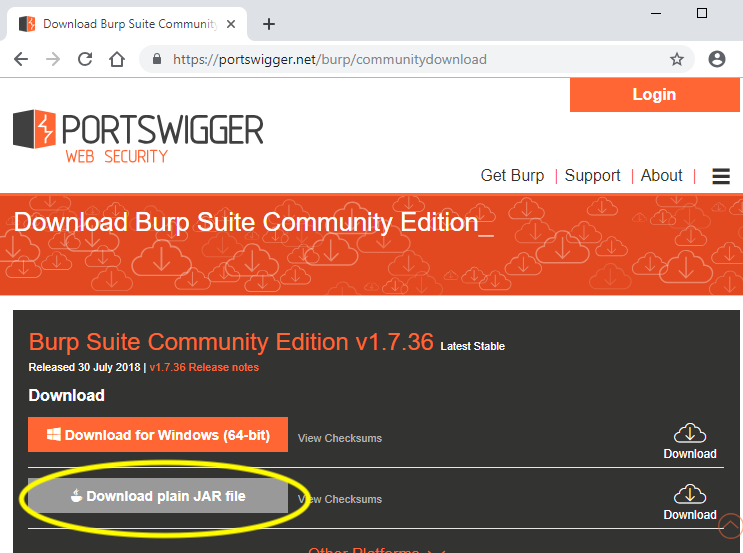
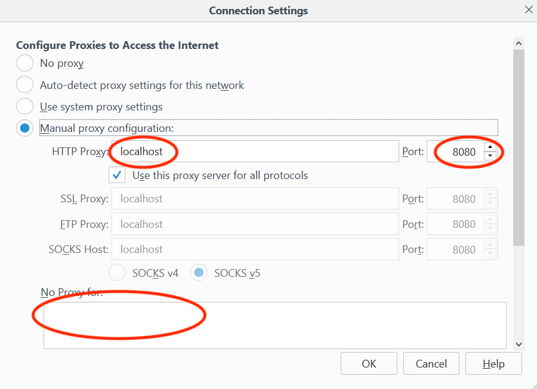
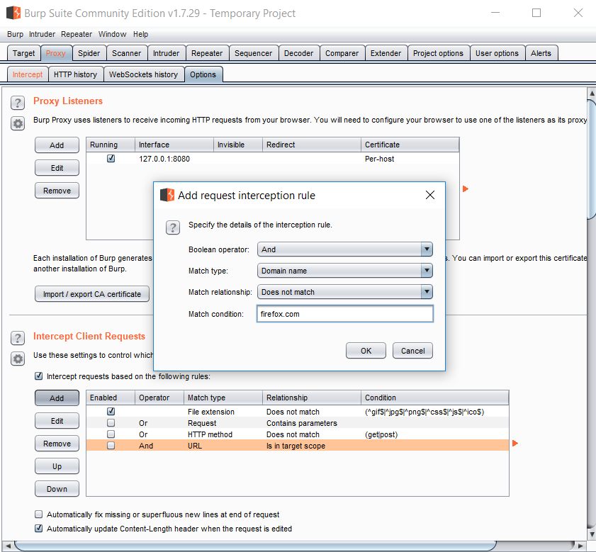
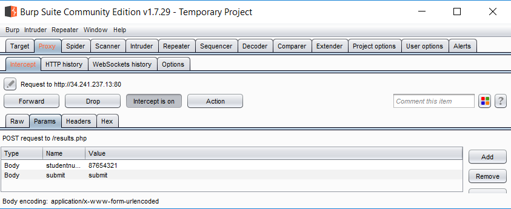
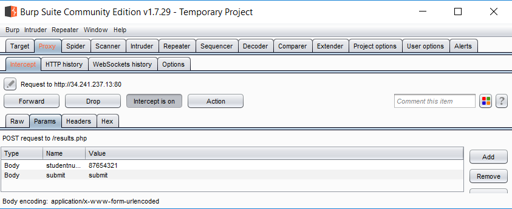

Objectives
In this lab, we will explore the proxy feature of a popular penetration testing tool.
Burp Suite
Burp Suite is a popular penetration testing tool with the following major features:
- Proxy for traffic interception/modification
- Vulnerability scanning
- Site crawling
In this lab, we will focus on using the proxy to manipulate HTTP requests & responses
Installation
Burp is available in Professional (paid for) and Community (free) editions. The Community edition will suffice for this lab.
Download the Community Edition from https://portswigger.net/burp. Choose the plain JAR file (requires that you have Java installed).

On startup, select "Temporary project" (default).
On the next screen, select "Use Burp defaults".
This will bring you to the main Burp view. Select the "Proxy" tab.

Burp is now ready to intercept traffic to/from any website you choose.
Browser configuration
Configure your web browser to point to Burp as a proxy. I recommend using Firefox for this.
In Firefox, you can find the proxy settings by going to Options/Preferences, then General, then Network Settings at the bottom. Enter localhost as the HTTP proxy, and 8080 as the port.
Set this as the proxy for all protocols and remove any reference to localhost from the No Proxy for: box.

Intercept requests
Request interception is turned on by default.
Each time your browser issues a HTTP request it will be stopped at the proxy and you have the option to Forward or Drop it.
When you visit a HTTPS site, Firefox will complain about an untrusted TLS certificate. This is because Burp Suite generates its own certificate and replaces the target site's real certificate with this one (i.e. a MITM attack). You can proceed anyway (with most websites) by confirming the exception.
Depending on config settings, most modern browsers maintain a dialogue with their "base". For example you may see frequent requests to domains like detectportal.firefox.com or advertisement sites. You can tune intercept options so that you don't have to deal with these.

Modify requests
Visit a site that takes form input (e.g. a username and password).
You should be able to easily modify the input at the proxy - i.e. after it has left the browser.
 


Intercept responses
Response interception is turned off by default.
Note that you can edit intercept options so that responses are also intercepted